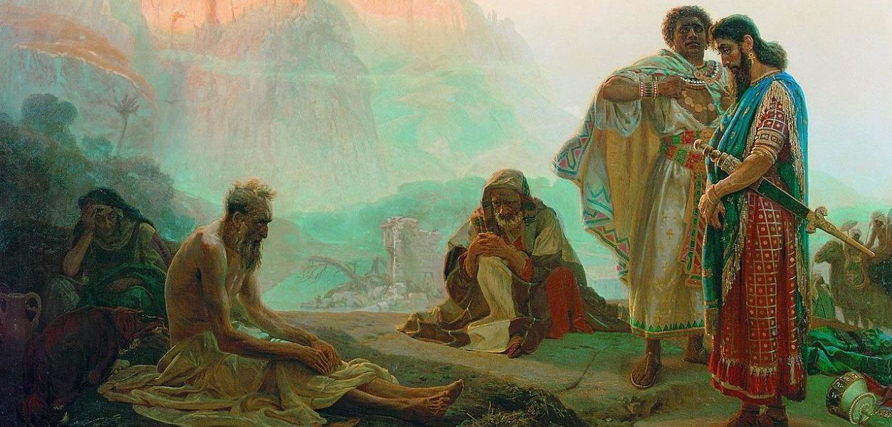
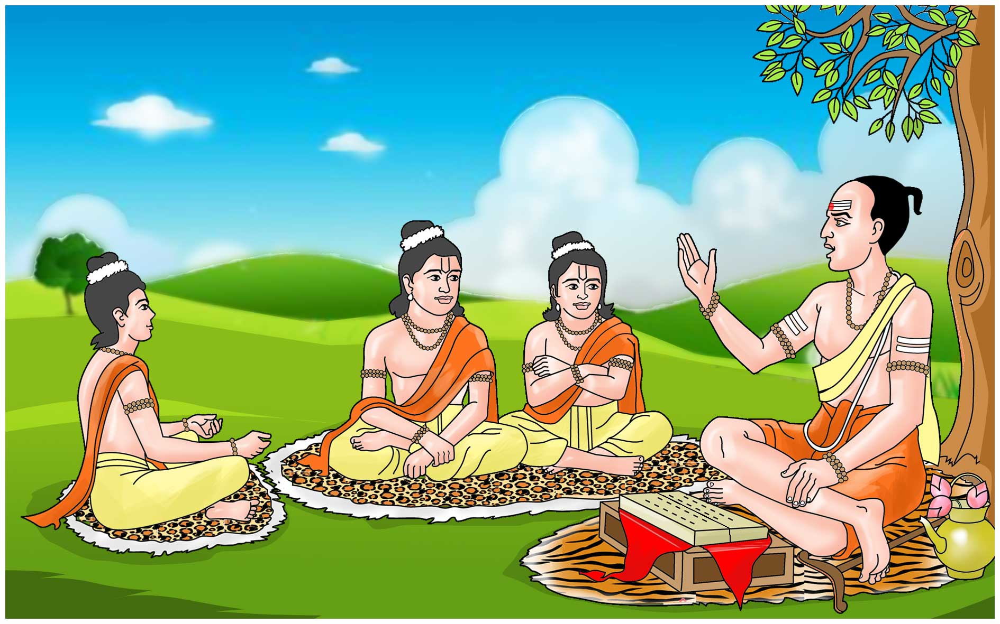
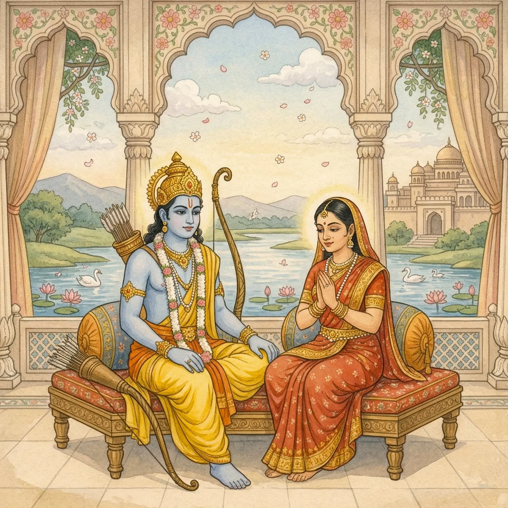
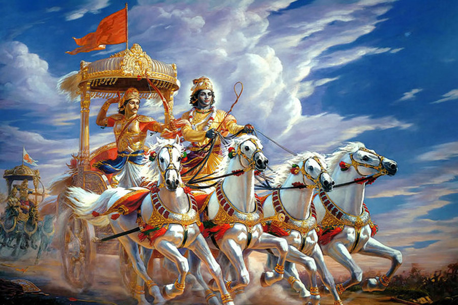

My Literary Journey
A Great Books Digital Portfolio
Bridging the logical precision of Information Technology with the timeless wisdom, human values, and moral insight of world literature.
Renan S. Alburo
Naga, Camarines Sur • Student & Reader of Literature
Personal Introduction
I am a dedicated IT student from Naga, Camarines Sur, who loves exploring not just codes and systems, but also stories that teach us about life, values, and human nature. While my focus is technology, I believe that literature helps me understand people better, which is important because technology is built to serve people. I am curious, eager to learn, and always looking for lessons that I can apply both in my studies and in my daily life.
Compilation of Seven Literary Analyses
Explorations of timeless masterpieces analyzed through distinct critical lenses. Click any card to read full details.

The Voice Out of the Whirlwind
From the Book of Job (Biblical text)
As an IT student the story The Voice Out of the Whirlwind teaches me that knowledge has its limits...

Panchatantra — Books 1 & 2
Attributed to Vishnu Sharma
Book 1 shows how easily friendships and trust can be ruined by lies, gossip and people who want to split others...

Ramayana
Attributed to Valmiki
The Ramayana teaches me that true strength comes from doing what is right even when it is hard...

Mahabharata
Attributed to Vyasa
The Mahabharata shows me that doing the thing is often the hardest choice we face...
The Odyssey
Attributed to Homer
The Odyssey teaches me that true strength is not about power or fighting skills...
Les Misérables
Victor Hugo
Les Misérables teaches me that kindness, mercy and love have the power to change a person’s life...
Psalm 91
From the Holy Scriptures
Psalm 91 teaches me that when I trust God and stay close to Him I can find peace and safety...
My Favorite Literary Masterpiece
Click the card below to read the complete personal narrative, images, and analysis.
Panchatantra — Books 1 & 2
Attributed to Vishnu Sharma
"I chose this as my favorite because every lesson in these stories matches exactly what I am going through right now. I built our capstone system, traveled all the way to Burias to collect data, and finished my tasks early. But when I got sick, everything fell apart..."